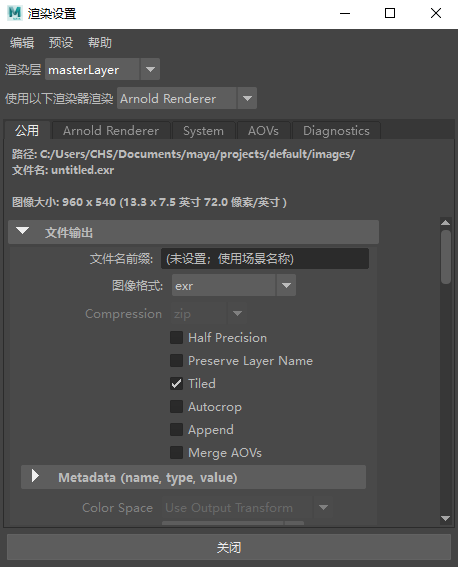
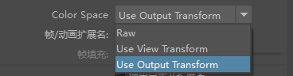
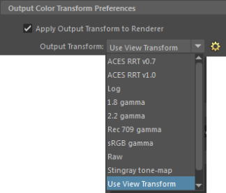
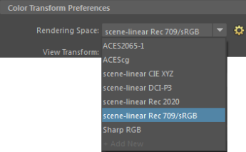

| 延伸阅读 |
|---|
| 请参见《Arnold 用户手册》中的渲染设置 |

要控制文件输出，请使用“渲染设置”(Render Settings)窗口上的“公用”(Common)选项卡，并展开“文件输出”(File Output)组。图像格式控件可用来选择可用的 Arnold 输出驱动程序节点。
在每种情况下，您可以指定文件名（如果留空则使用场景名称），然后根据输出驱动程序选择各种选项。
您也可查看正在进行的渲染的输出图像。为此，必须执行以下操作：
此选项会将多个 AOV 层保存到一个多通道 EXR 文件中。它将所有启用的 AOV 写入到一个图像文件，使用“RenderPass”的名称对 EXR 中的层进行命名。
EXR 过扫描选项位于渲染设置(Render Settings)中。
“颜色空间”(Color Space)属性可用于设置特定的颜色空间以输出渲染图像。默认情况下，8 位图像通过“使用视图变换”(Use View Transform)选项使用“视图变换”(View Transform)（默认情况下为 sRGB Gamma），16/32 位图像通过“使用输出变换”(Use Output Transform)选项使用“将输出变换应用于渲染器”(Apply Output Transform to Renderer)（默认情况下处于禁用状态）。“未经处理”(Raw)选项不会应用任何颜色变换。

从 Maya“颜色管理”(Color Management)首选项启用“将输出变换应用于渲染器”(Apply Output Transform to Renderer)后，可设置渲染器的专用颜色空间（如果已选择“使用输出变换”(Use Output Transform)选项）。

使用“未经处理”(Raw)选项或“使用输出变换”(Use Output Transform)选项时（“将输出变换应用于渲染器”(Apply Output Transform to Renderer)处于禁用状态），不会应用任何颜色变换，因此“颜色管理”(Color Management)首选项中的“渲染空间”(Rendering Space)是输出的颜色空间。
